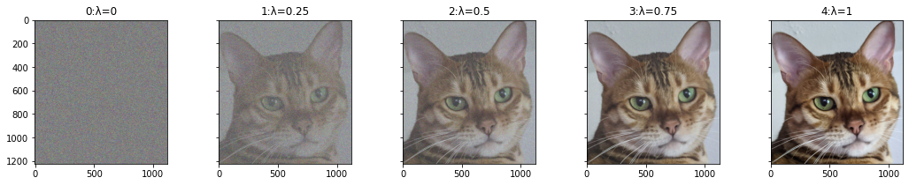
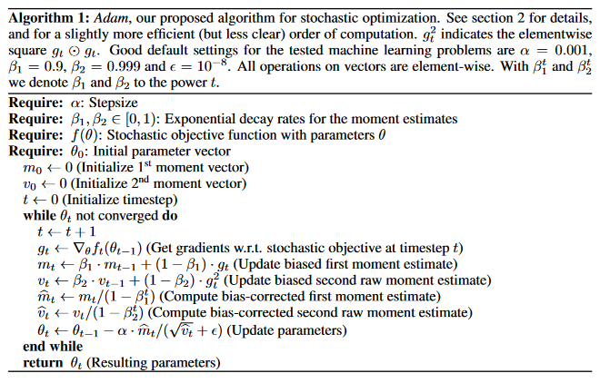

import torchPyTorch torch.lerp Exploration
python
technical
exploration
Reviewing torch.lerp and its uses
Introduction
torch.lerp stands for linear interpolation is a handy function that combines two tensors using a provided weight. Let’s explore how it can be used!
Let’s start off with something easy. We have two items and we want to combine them by taking 75% of item1 and 25% of item2. Mathematically, this could be represented as \(output = 0.75*item1+0.25*item2\). A more general form of this can be represented as \(output = pct*item1+(1-pct)*item2\). This is a very common piece of code in machine learning papers. That’s why pytorch has the handy torch.lerp function!
item1 = torch.tensor(2.)
item2 = torch.tensor(6.)
weight = 1/4 # This means that we will use 3/4 of item1 and 1/4 of item2output1 = (1-weight)*item1+(weight)*item2output2 = torch.lerp(item1, item2, weight)output1tensor(3.)output2tensor(3.)Here is an example in the mixup paper of lerp being used in practice:

import matplotlib.pyplot as pltnp_april = plt.imread('notebook_images/pets/april.jpg')
april = torch.from_numpy(np_april)april_smaller = april[600:600+1224,1100:1100+1124,:]/255.x_i = april_smaller #simulated image #1
x_j = torch.rand_like(x_i) #simulated image #2
lam=0.1 # Let's set lam to 0.5 which will blend equal parts of xi and xj.Now, let’s blend these two ‘images’
fig, axs = plt.subplots(ncols=5, sharey=True, figsize=(18,3))
for i,lam in enumerate([0, 0.25, 0.5, 0.75, 1]):
x_hat = torch.lerp(x_j,x_i,lam)
axs[i].set_title(f'{i}:λ={lam}')
axs[i].imshow(x_hat)
from fastcore.all import test_close, test_eqx_hat = torch.lerp(x_j,x_i,weight=0.5)test_close((x_j + x_i)/2, x_hat, eps=1e-6)As we expected, these two are equal (within a small amount of error due to float math)
Linear interpolation is also often used in exponentially weighted decay which allows us to not entirely discard previous weight results while only keeping track of the most recent value.
Here is what exponential weighted decay looks like in the Adam Optimizer formula:
)
This algorithm actually contains two linear interpolations:
\(m_t = \beta_1*m_{t-1}+(1-\beta_1)*g_t\)
\(v_t = \beta_2*v_{t-1}+(1-\beta_2)*g_t^2\)
and here is what they look like in code:
m_tm1=torch.tensor(0.)
v_tm1=torch.tensor(0.)
g_t = torch.tensor(0.5)
beta1=torch.tensor(0.99)
beta2=torch.tensor(0.999)m_t = torch.lerp(m_tm1, g_t, beta1)
v_t = torch.lerp(v_tm1, g_t**2, beta2)m_ttensor(0.4950)v_ttensor(0.2498)Hope this was helpful and gave a better understanding of what torch.lerp is and where it is used. If you have any suggestions or questions, please feel free to reach out and I would be happy to address them!